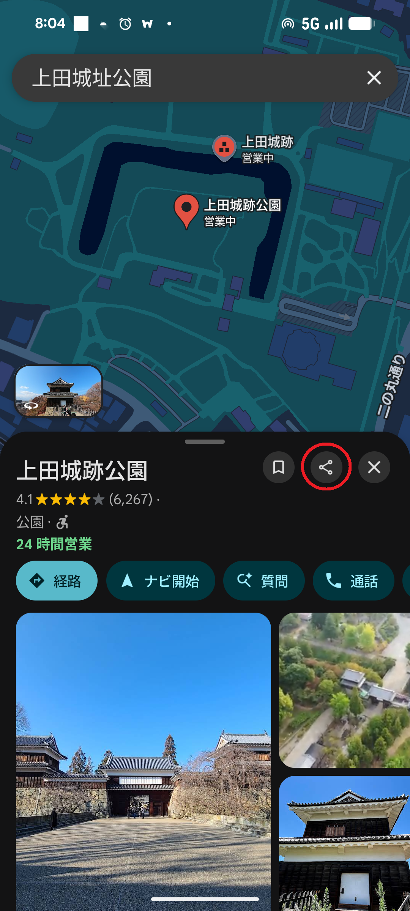
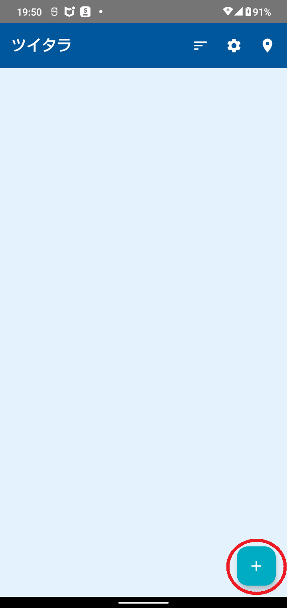
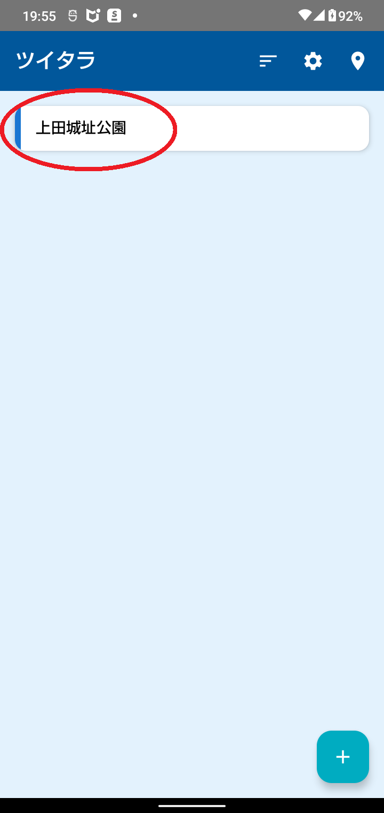
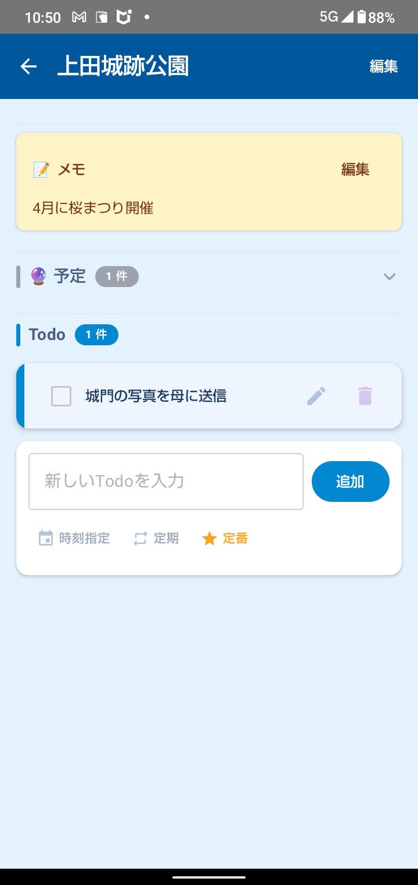
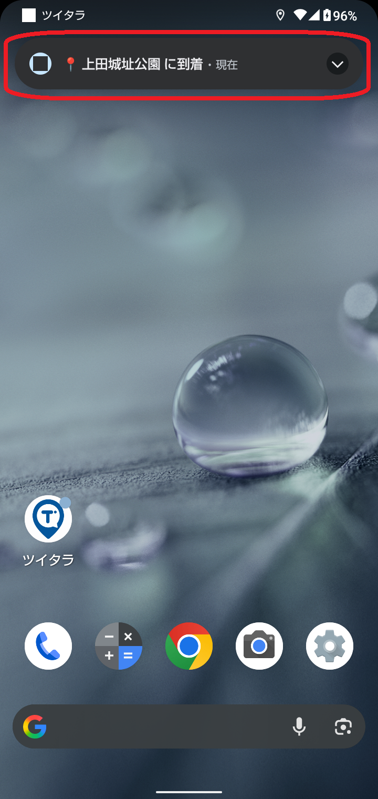

ツイタラ 使い方ガイド
最終更新: 2026-07-30 / Doster Studio
ツイタラは、登録した場所に着くと自動で Todo を表示してくれる、場所連動型のリマインダーアプリです。スーパー、駅、会社、訪問先など、よく行く場所に「やるべきこと」を結び付けておけば、現地に着いた瞬間に思い出せます。
1. ツイタラとは
ホーム画面には、登録した場所がカード形式で並びます。各カードには場所名と、その場所に紐付けた Todo の数が表示されます。

ホーム画面：登録した場所が一覧で表示されます
ツイタラはバックグラウンドで動作するため、アプリを閉じていても登録した場所に近づくと自動で通知が届きます。
2. 最初に行う設定（権限の許可）
ツイタラを正しく動作させるには、位置情報を 「常に許可」 にする必要があります。初回起動時に順番にご案内しますので、画面の指示に沿って進めてください。
初回起動時は、次の順番でダイアログが表示されます。
初回起動時の流れ
- 通知の許可 …「許可」をタップ
※許可しないと到着時にお知らせが届きません
- 位置情報の許可 …「正確な位置」を選んだうえで「アプリの使用時のみ」をタップ
※「おおよその位置」では数百m〜数kmの誤差が出るため、到着検知が正しく動作しません。「今回のみ」「許可しない」でも継続的に取得できません
- 「位置情報の『常に許可』について」 …ツイタラからの説明が表示されます。内容をご確認のうえ「続ける」をタップ
- 位置情報の権限画面（Android の設定画面）…「常に許可」を選択して戻る
- 「通知の自動起動について」 …「設定を開く」から「アラームとリマインダー」をオンにする
※時間帯指定や端末再起動後の自動再開に必要です。あとから設定画面でも変更できます

位置情報の許可ダイアログ（「正確な位置」＋「アプリの使用時のみ」を選択）
Android のセキュリティ仕様により、最初のダイアログでは「常に許可」を直接選べません。まず「アプリの使用時のみ」を選び、続いて表示される画面で「常に許可」に切り替える流れになります。

「常に許可」を選択した状態
あとから許可し直すこともできます
初回に「今はしない」を選んだ場合や、あとから設定を変えたい場合は、ホーム画面上部に表示される警告バナーをタップすると、該当する設定画面へ直接移動できます。
なぜ「常に許可」が必要？
ツイタラはアプリを閉じている間も場所への接近を検知する設計です。「アプリの使用中のみ許可」だと、画面を消した瞬間に位置検知が停止してしまい、到着通知が届きません。
位置情報は端末内でのみ処理され、当方（開発者）のサーバーや第三者に送信されることはありません。詳細は
プライバシーポリシーをご確認ください。
3. 場所を登録する
場所を登録する方法は 2 種類あります：
- A. Google マップから共有する（Google マップで検索した場所をワンタップで登録 / おすすめ）
- B. ツイタラから登録する（ホーム画面の「+」ボタン）
おすすめは A（Google マップから共有）です。地図上で場所を確認しながら登録できるので、どこを登録しているかが視覚的に分かりやすく、住所や座標も自動入力されるため入力ミスがありません。
A. Google マップから共有して登録する
Google マップで検索した場所を、ツイタラに直接共有して登録できます。住所や座標を手入力する必要がないため、もっとも手早く登録できる方法です。地図上で場所を確認できるので、どこを登録しているかイメージしやすいというメリットもあります。
共有から登録する手順
- Google マップで登録したい場所を検索
- 場所の詳細画面で「共有」ボタンをタップ
- 共有先の一覧から「ツイタラ」を選択
- ツイタラが起動し、場所名・住所・座標が自動入力される
- 必要に応じてタグを追加し「追加する」ボタンをタップ

Google マップの場所詳細画面 → 「共有」ボタンをタップ

共有先の一覧から「ツイタラ」を選択
店舗名・施設名で検索した場所をそのまま登録できるので、住所が分からない場所（ファミレス、コンビニ等のチェーン店舗）も簡単に登録できます。
B. ツイタラから登録する
ホーム画面右下の「+」ボタンから、新しい場所を登録できます。Google マップを開かずに登録したい場合や、現在地・座標を直接指定したい場合はこちらが便利です。

ホーム画面右下の「+」ボタン（タップして場所を追加）
「+」ボタンをタップすると場所追加画面が開き、4 通りの方法で場所を登録できます：
- 現在地から：今いる場所をワンタップで登録
- 住所を入力：住所をテキストで入力して登録（主要な施設名・駅名なども住所の代わりに入力できることが多いです。例：「東京駅」「○○病院」「店舗名 〇〇店」等）
- マップから：Google マップで該当場所の URL をコピーしてからボタンをタップ（クリップボードから座標を自動取得）
- 座標を直接入力：緯度・経度を直接指定

「+」ボタン → 場所追加画面（4 通りの登録方法）
登録の手順
- ホーム画面右下の「+」ボタンをタップ
- 登録方法を選択（おすすめ：現在地 or マップから）
- 場所の名前を入力（例：「自宅」「会社」「スーパー」）
- 必要に応じてタグ（例：#買い物、#訪問先）を追加
- 「追加する」ボタンで完了

登録した場所がホーム画面に追加されます
登録した場所を確認する（重要）
登録後は、実際に正しい場所が登録されているか確認することをおすすめします。特に住所や場所の名称から登録した場合、座標が意図したものとずれることがあります。ツイタラの到着検知は登録座標を基準に動作するため、ずれていると通知が来ない／違う場所で通知が来る原因になります。
確認手順
- ホーム画面で登録した場所のカードをタップ → 詳細画面が開く
- 右上の編集アイコン（鉛筆マーク）をタップ → 編集画面が開く
- 「📍 地図で確認する」ボタンをタップ → Google マップが起動し、登録座標にピンが立つ
- 意図した場所と一致しているか視覚的に確認

編集画面の「📍 地図で確認する」ボタン（タップで Google マップが起動）
違う場所が表示された場合は、編集画面で住所を修正するか、A の「Google マップから共有」で登録し直してください。Google マップから共有する方法は座標の精度が比較的高く、再登録の際もおすすめです。
4. Todo を追加する
登録した場所をホーム画面でタップすると、詳細画面が開きます。ここで Todo を追加していきます。

場所の詳細画面で Todo を追加
Todo の種類
- 通常 Todo：その場所に着いたら表示される基本的なリマインダー
- 時刻指定 Todo：指定した時刻以降に到着した時のみ表示
- 定期 Todo：毎週・毎月など、繰り返し設定可能
- 定番 Todo（テンプレート）：よく使う Todo をテンプレートから呼び出し

複数の Todo を登録した状態
5. 到着通知を受け取る
登録した場所に近づくと、設定した距離（デフォルト 100m）以内で自動的に通知が届きます。アプリを起動していなくても動作します。

通知バーに表示される到着通知
通知をタップすると、その場所に登録した Todo の一覧が全画面で表示されます。ロック画面でも表示されるので、すぐに内容を確認できます。

ロック画面では全画面で Todo リストを表示
動作の仕組み（重要）
ツイタラはバッテリー消費を抑えるため、スマートフォンの動きをトリガーに位置情報を確認する設計です。加速度センサーで動きを検知し、動きがあったタイミングで登録場所への接近をチェックします。
時刻指定 Todo も時間帯指定の開始時刻も、スマホが静止していると その時刻に達しても Todo が自動表示・サービス起動されません。ポケット・カバン等に入れて持ち歩いている時や、手に持って歩いている時は通常通り動作します。デスクに置きっぱなしの時は、スマホを少し動かす（持ち上げる・タップする・移動する）と検知が再開します。
6. ホーム画面の操作
場所の並び替え
登録した場所が増えてきたら、ホーム画面上部の ソートアイコン（≡） をタップして並び順を変更できます。5 種類のソート方法が選べます。
- 登録順：場所を登録した順（デフォルト）
- 名前順：場所名のあいうえお順
- 距離順：現在地から近い順
- Todo件数順：未完了 Todo が多い順
- 更新日時順：最近編集した順

ソートアイコン（≡）をタップして並び順を選択（選択中の項目にチェックが付きます）
選択したソート順はアプリを閉じても保持されます。訪問先を巡回する場合は「距離順」、最近触った場所を上に出したい場合は「更新日時順」が便利です。
位置情報検知の ON / OFF
ホーム画面右上の 位置情報アイコン（ ） をタップすると、位置情報検知サービスを手動で ON/OFF できます。一時的に通知を止めたい場合（旅行中で別エリアにいる、休日で通知を止めたい等）に便利です。
） をタップすると、位置情報検知サービスを手動で ON/OFF できます。一時的に通知を止めたい場合（旅行中で別エリアにいる、休日で通知を止めたい等）に便利です。
手動 OFF

になっている間は、登録場所に近づいても通知は来ません。
タグでの絞り込み
場所登録時に付けたタグ（例：#買い物、#訪問先、#銀行 等）を使って、ホーム画面に表示する場所を絞り込めます。場所が増えてきた時に目的の場所を素早く見つけるのに便利です。
使い方
- ホーム画面上部に登録済みのタグが タグチップ として並ぶ
- タグチップをタップすると、そのタグが付いた場所だけが表示される
- 複数タグを選択すると、AND（全部含む）/ OR（どれか含む） の絞り込みを切り替えられる
- 「全て」チップをタップで絞り込み解除
例：「#スーパー」を選択 → スーパーだけ表示。「#訪問先」と「#東京」を AND で選択 → 東京の訪問先だけ表示。
一括で Todo を追加する
複数の場所すべてに、同じ Todo を一度に追加できます。「すべての訪問先でカタログを配布」「どこのスーパーでもいいので卵を買う」などの用途で設定できます。
追加手順
- タグで絞り込む、または「すべて」を選んだままにする
- 表示されるボタンをタップ
・タグ 1 つ →「「#タグ名」に一括Todoを追加」
・タグ複数 →「表示中の N 件に一括追加」
・絞り込みなし →「すべての場所に一括Todoを追加」
- Todo の内容を入力
- 「個別 Todo」または 「共通 Todo」 を選択（下記）
- 「追加する」ボタンで完了

「#スーパー」に一括追加するダイアログ（個別 Todo / 共通 Todo / 時刻指定 / 定期 / 定番 が選択可能）
個別 Todo と共通 Todo の違い
- 個別 Todo（Todo の一括登録）：各場所に独立した Todo として追加される。1 ヶ所でチェックしても他には影響しない。
例：#訪問先に「カタログ配布」を個別 Todo で追加 → 訪問先で個別に「カタログ配布」が表示される。
- 共通 Todo（どこか 1 ヶ所で対応すれば完了）：同じ ID で紐付けられ、どこか 1 ヶ所で完了にすれば全場所で完了扱いになる。
例：#スーパーに「卵を買う」を共通 Todo で追加 → 複数のスーパーを登録していても、どこか 1 つのスーパーで卵を買えば完了。
共通 Todo はストライプ表示と「🔗 共通」バッジで判別できます。タグを削除すると、そのタグで一括追加された Todo は自動的に削除されます。
スマホのホーム画面にショートカットを作る
よく開く場所や、よく使う絞り込みを、スマホのホーム画面にアイコンとして置いておけます。アプリを開いてから目当ての場所を探す手間がなくなり、ワンタップで目的の画面が直接開きます。
A. 特定の場所を直接開くショートカット
- ホーム画面で場所のカードをタップし、その場所の詳細画面を開きます
- 画面右上の ショートカット追加アイコン（「編集」の左隣にある、スマホに矢印が入った形のアイコン）をタップします
- 「ホーム画面に追加しますか？」という確認が表示されたら、追加を選びます
作られたショートカットにはその場所の名前が付きます。タップすると、アプリのホーム画面を経由せずに、その場所の Todo 一覧が直接開きます。毎日行くスーパーや、担当のお客様先など、開く回数が多い場所ほど効果があります。
B. 絞り込んだ一覧を直接開くショートカット
- ホーム画面で、残しておきたい状態に絞り込みます
・タグを 1 つ選ぶ
・タグを複数選んで AND / OR を切り替える
・「すべて」のまま（絞り込みなし）でも作れます
- 画面右上の ショートカット追加アイコン（並び替えアイコンと設定アイコンの間）をタップします
- 確認が表示されたら、追加を選びます
タップした時点の絞り込み状態が、そのまま保存されます。たとえば「#買い物」だけを選んだ状態で作れば 「#買い物」 という名前のショートカットができ、いつタップしても買い物の場所だけが並んだ画面が開きます。
同じタグの組み合わせでも、AND と OR は別々のショートカットとして作れます。ショートカット名の末尾に (AND) / (OR) が付くので見分けられます。
例：#買い物・#訪問先(AND)＝両方のタグが付いた場所だけ／#買い物・#訪問先(OR)＝どちらかのタグが付いた場所
ホーム画面へのショートカット追加は、お使いのスマホのホームアプリ（ランチャー）が対応している場合のみご利用いただけます。対応していない機種では、その旨のメッセージが表示されます。
また、ショートカットの追加を確認する画面は Android の機能のため、表示のされ方は機種によって異なります。
7. 基本設定
ホーム画面の歯車アイコンから設定画面を開きます。

設定画面トップ
カラーテーマ
7 種類（マリン／ウォーム／アース／ラブリー／ハッピー／カラフル／モノクロ）から選べます。
到着通知をする時間帯
業務時間中だけ動作させたい等、特定の時間帯だけ位置検知を有効にできます。

時間帯指定：9:00〜18:00 の例
使い方
- 設定画面で「時間帯を指定する」をオン
- 開始時刻と終了時刻を設定
- 指定時間外は位置検知が自動で停止し、バッテリーを節約
この機能には Android の「正確なアラーム」権限が必要です。このカードの先頭に許可状況が表示されるので、「✗ 許可されていません」と出ている場合はボタンから許可してください。端末を再起動したあとの自動再開にも必要です。
到着通知距離を指定する
登録した場所から何メートル以内で「到着」とみなすかを設定できます。50m〜500m の範囲で調整可能です。

到着距離は 50m〜500m で調整可能
狭い範囲（50m）にすると正確に近づいた時だけ通知、広い範囲（500m）にすると早めに通知が届きます。用途に応じて調整してください。車移動が多い方は広めがおすすめです。
近接監視間隔
登録場所の 500m 以内にいるときの位置確認の間隔を、5 秒／10 秒／30 秒から選べます。車移動が中心の方は 5〜10 秒、徒歩中心の方は 30 秒がおすすめです。
完了 Todo の自動削除
完了した Todo を一定時間後に自動で消せます（15 分後〜12 時間後、または削除しない）。定期 Todo は削除ではなく、次回の予定にリセットされます。
削除は次回の到着検知のタイミングで実行されます。
8. 定番 Todo（テンプレート）
「ゴミ出し」「水やり」など、よく使う Todo はテンプレートとして保存できます。Todo 追加時に「定番」ボタンから呼び出せます。
テンプレートの活用例
- スーパー → 「牛乳を買う」「卵を買う」
- 会社 → 「PC を起動する」「メールチェック」
- 訪問先 → 「名刺交換」「資料を渡す」
9. データの引き継ぎ・バックアップ
登録した場所・Todo・定番 Todo・各種設定は、ファイルとして書き出して別の端末に引き継げます。
機種変更の手順
- 旧端末：設定 →「データのバックアップ／復元」→「バックアップを書き出す」
- 保存先を選んでファイルを保存（Google ドライブなどに保存すると受け渡しが簡単です）
- 新端末：ツイタラをインストールし、設定 →「バックアップから復元する」
- 書き出したファイルを選択
復元すると、その端末の現在のデータはすべて置き換わります。復元前にご確認ください。
Android の標準バックアップ機能が有効な場合、機種変更時に自動で復元されることもあります。ただし確実に引き継ぐには、上記の書き出し／読み込みをおすすめします。
10. 通知が来ないときは
到着しても通知が届かない場合、次の順にご確認ください。
- 1. 位置情報が「常に許可」になっていますか？
- ホーム画面に赤い警告バナーが出ていればタップして設定画面へ。「アプリの使用中のみ許可」では、アプリを閉じている間は検知できません。
- 2. 通知が許可されていますか？
- こちらも警告バナーが表示されます。タップして通知設定を開き、許可してください。
- 3. 位置検知が OFF になっていませんか？
- ホーム画面右上の位置情報アイコンをご確認ください。灰色／斜線付きの場合は OFF です。
- 4. 時間帯指定の範囲外ではありませんか？
- 設定で時間帯を指定している場合、その時間外は検知が停止します。また「正確なアラーム」権限が未許可だと、時間帯どおりの自動開始・停止が動作しません。
- 5. その場所に未完了の Todo がありますか？
- ツイタラは未完了の Todo がある場所でのみ通知します。Todo が無い場所や、すべて完了済みの場所では通知されません（メモだけでは通知されません）。
- 6. スマホが長時間静止していませんか？
- 動きをきっかけに位置を確認する仕組みのため、完全に静止していると検知が動きません。持ち歩いていれば通常どおり動作します。
- 7. 登録した座標は正しいですか？
- 編集画面の「📍 地図で確認する」で、意図した場所にピンが立つかご確認ください。
- 8. 電池の最適化が効いていませんか？
- 端末の設定で、ツイタラの電池最適化を「制限しない」にすると安定することがあります。
屋内では GPS の精度が落ちるため、到着通知距離を広め（200m 程度）に設定すると安定することがあります。
それでも解決しない場合（テスター向け）
設定画面の下部にある 「🩺 位置情報サービス診断ログ」 を開き、「全文コピー」でログをコピーしてサポートメールに貼り付けてお送りください。どのタイミングで位置を取得し、なぜ通知に至らなかったかを追跡できます。
ツイタラをご利用いただきありがとうございます。気になった点・不具合・改善要望などありましたら、お気軽にお問い合わせください。